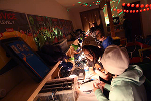
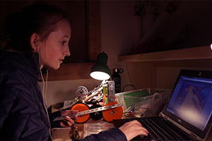
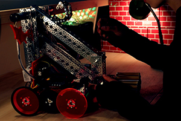

In 2017, my sister Greta and I launched our non-profit Nerdy Girls in order to carve out a culture around girls and robotics where none has ever existed before. Since then, we have built it into the ultimate robotics training ground where a girl walks in with no experience and walks out a master robot trainer. In the pre-pandemic era, 20+ girls would meet up with us at a secret location on Friday nights to systematically build, code, and battle their ways through a custom robotics curriculum that we designed. Now, we’re taking the culture online, and are in the process of building an MMORPG-style video game where girls can virtually meet up to train robots together. Read the story behind Nerdy Girls here. Learn more at nerdygirlsproject.org.
Our latest creation is called The Robot Underground, and we think it will be the world’s best online robotics curriculum for rogue middle school and high school teens who want to build more advanced robots. Building on our Nerdy Girls curriculum, The Robot Underground will be the first of its kind: a completely free and open source YouTube-based robotics curriculum geared toward renegades everywhere who want to break into robotics from the comfort of their own home. Read the story behind The Robot Underground here. Learn more at robotunderground.party.
We’re building a culture around girls and robotics, and we’re producing a robotics curriculum for the masses. But, there’s still one missing piece: there’s no scalable robotics kit for the cool kid who just wants to build advanced robots at home. All kits currently on the market are either equipped to build only one robot, very expensive, or a delightful combination of both. So my sister and I decided to dig in and create our own robotics kit. We call it Spicy Meatbots, and it’s pretty special. Read the story behind Spicy Meatbots here. Watch our official Spicy Meatbots video here.
